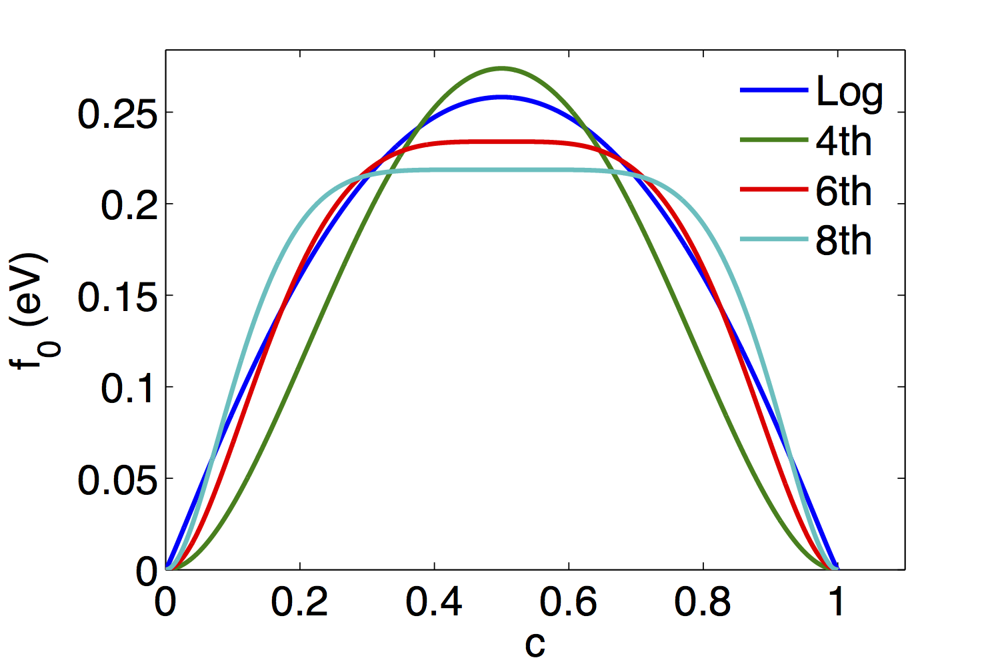

Quantitative Two Phase Polynomial Free Energies
Introduction
In a species separation phase field model, a single concentration is used to model a two phase system. The evolution of the concentration is predicted by taking derivatives of a double-well free energy. This free energy can be represented with a simple thermodynamic model such that
However, the natural logs in this expression can significantly complicate the solution, typically requiring small time steps to converge.
An alternative to the thermodynamic free energy is to use polynomial free energy, which simplifies the numerical solution but decrease the physical accuracy. We have implemented polynomial free energies of three different orders in the phase field module that can be used to solve this problem.
Polynomial Equations
We have implemented three polynomial free energies of different orders, as shown in the figure.

Plot of the three polynomial free energies, with the thermodynamic free energy shown for reference.
The simplest model is the fourth order free energy, where
Where is the height of the energy barrier and is the equilibrium concentration.
The sixth and eighth order polynomials are defined by the equation
where
and
Quantitative Model Development
To create a quantitative model using the polynomial free energies, values for the mobility , the barrier height , and must be determined in terms of measurable quantities. The equilibrium concentration defines the locations of the wells in the free energy according to
To determine the other parameters, we follow the derivation from Moelans et al. (2008). To simplify the derivation, we consider an interface along the -direction, such that the interfacial width is defined as
The polynomial free energies have been developed such that , thus
Therefore, can be expressed as a function of the barrier height and the interfacial width according to
(1)
To define the barrier height , we first determine the surface energy. The surface energy is calculated according to
(2)
According to the principles of variational calculus, the functions that extremize the function have zero first derivatives, i.e.
or, the integrated equation
By rearranging the equation, we obtain
(3)
Combining these equations gives
After a change of variables and substitution,
(4)
To define the value of the integral , we express it as
(5)
where is a function of that varies for each polynomial order . If we assume that , becomes a constant value which we can calculate for each polynomial order, according to
with evaluated numerically. Thus, the surface energy is equal to
(6)
We can then solve for to obtain
By combining these equations, we obtain
This expression is then substituted to give
The form of the mobility must be derived to produce a quantitative physical behavior. In order for the phase field model to accurately describe vacancy diffusion, the Cahn-Hilliard equation must be equivalent to Fickian diffusion when , i.e.
where is the mobility for the polynomial free energy and is the diffusivity. Thus, for
(7)
For each of the polynomial free energies, the value of for can be written in the form
(8)
where is a polynomial coefficient defined above. Thus, the value for the mobility is determined by combining the equations to obtain
(9)
To summarize, the quantitative expressions for the four model parameters required by the polynomial free energies can be obtained using the equations above. We restate them here:
Numerical Implementation in the Phase Field Module
The polynomial free energies have been implemented in the PolynomialFreeEnergy material in the MOOSE phase field module. The free energies are all contained in the same material, where the order is an input parameter. To minimize required code and coding errors, the free energy derivatives are obtained using automatic differentiation via the ExpressionBuilder tools. The free energy is used by the parsed kernels, SplitCHParsed and CahnHilliard.
The material properties required for the model have been implemented in the PFParamsPolyFreeEnergy, which also takes the polynomial order as an input.